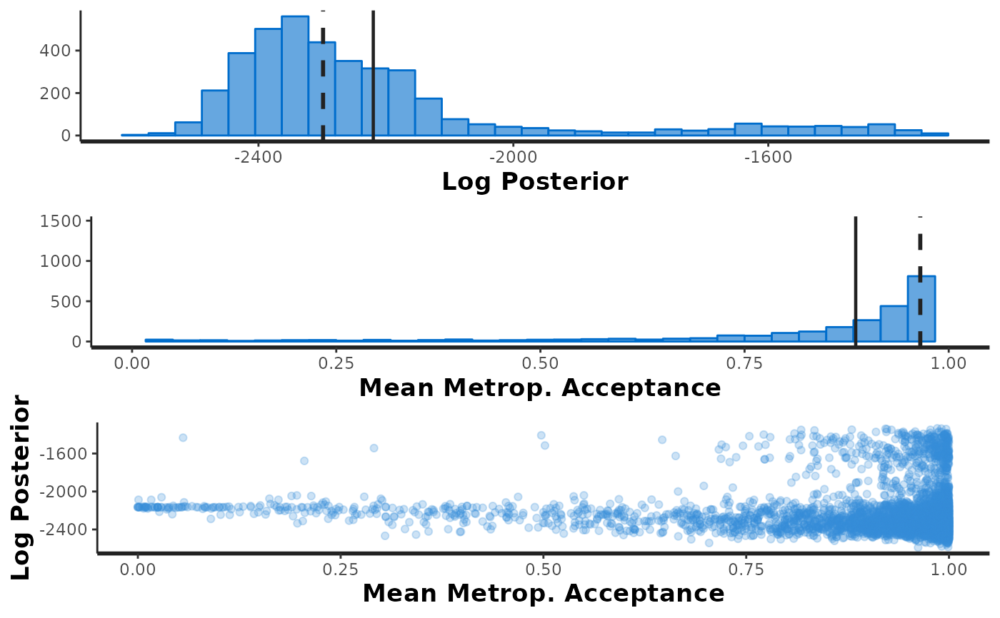

This function extracts outputs of the Bayesian model fitted
using bayes_met(), and provides some diagnostics about the model
extr_outs(
data,
trait,
gen,
model,
effects,
nenv,
probs = c(0.025, 0.975),
check.stan.diag = FALSE,
verbose = FALSE,
...
)A data frame containing the observations
A character representing the name of the column that corresponds to the analysed trait
A character representing the name of the column that corresponds to the evaluated genotypes
An object containing the Bayesian model fitted using rstan
A string vector containing the codes of the effects included in the model. The codes are:
r : replicate effect
b : block inside replicate effect (if the trials were laid out in
incomplete blocks design)
l : environment effect
m : region effect (if it is available)
g : genotypic effect
gl : genotype-by-environment effect
gm : genotype-by-region effect
The number of environments in the analysis
A vector with two elements representing the probabilities (in decimal scale) that will be considered for computing the quantiles.
A logical value indicating whether the function should
extract some diagnostic using native rstan functions.
A logical value. If TRUE, the function will indicate the
completed steps. Defaults to FALSE
Passed to rstan::stan_diag()
The function returns a list with:
post : a list with the posterior of the effects, and the data
generated by the model
variances : a data frame with the variances of each effect
map : a list with the maximum posterior values of each effect
ppcheck : a matrix containing the p-values of maximum, minimum,
median, mean and standard deviation; effective number of parameters, WAIC2
value, Rhat and effective sample size.
fun.plots : a list with three types of ggplots: histograms, trace plots and density
plots. These will be available for all effects declared at the effects argument.
More details about the usage of extr_outs, as well as the other function of
the ProbBreed package can be found at https://saulo-chaves.github.io/ProbBreed_site/.
# \donttest{
mod = bayes_met(data = soy,
gen = "Gen",
env = "Env",
repl = NULL,
reg = "Reg",
res.het = FALSE,
trait = "Y",
iter = 2000, cores = 1, chain = 4)
#> recompiling to avoid crashing R session
#>
#> SAMPLING FOR MODEL 'BayesMET' NOW (CHAIN 1).
#> Chain 1:
#> Chain 1: Gradient evaluation took 0.001081 seconds
#> Chain 1: 1000 transitions using 10 leapfrog steps per transition would take 10.81 seconds.
#> Chain 1: Adjust your expectations accordingly!
#> Chain 1:
#> Chain 1:
#> Chain 1: Iteration: 1 / 2000 [ 0%] (Warmup)
#> Chain 1: Iteration: 200 / 2000 [ 10%] (Warmup)
#> Chain 1: Iteration: 400 / 2000 [ 20%] (Warmup)
#> Chain 1: Iteration: 600 / 2000 [ 30%] (Warmup)
#> Chain 1: Iteration: 800 / 2000 [ 40%] (Warmup)
#> Chain 1: Iteration: 1000 / 2000 [ 50%] (Warmup)
#> Chain 1: Iteration: 1001 / 2000 [ 50%] (Sampling)
#> Chain 1: Iteration: 1200 / 2000 [ 60%] (Sampling)
#> Chain 1: Iteration: 1400 / 2000 [ 70%] (Sampling)
#> Chain 1: Iteration: 1600 / 2000 [ 80%] (Sampling)
#> Chain 1: Iteration: 1800 / 2000 [ 90%] (Sampling)
#> Chain 1: Iteration: 2000 / 2000 [100%] (Sampling)
#> Chain 1:
#> Chain 1: Elapsed Time: 215.896 seconds (Warm-up)
#> Chain 1: 489.397 seconds (Sampling)
#> Chain 1: 705.293 seconds (Total)
#> Chain 1:
#>
#> SAMPLING FOR MODEL 'BayesMET' NOW (CHAIN 2).
#> Chain 2:
#> Chain 2: Gradient evaluation took 0.000842 seconds
#> Chain 2: 1000 transitions using 10 leapfrog steps per transition would take 8.42 seconds.
#> Chain 2: Adjust your expectations accordingly!
#> Chain 2:
#> Chain 2:
#> Chain 2: Iteration: 1 / 2000 [ 0%] (Warmup)
#> Chain 2: Iteration: 200 / 2000 [ 10%] (Warmup)
#> Chain 2: Iteration: 400 / 2000 [ 20%] (Warmup)
#> Chain 2: Iteration: 600 / 2000 [ 30%] (Warmup)
#> Chain 2: Iteration: 800 / 2000 [ 40%] (Warmup)
#> Chain 2: Iteration: 1000 / 2000 [ 50%] (Warmup)
#> Chain 2: Iteration: 1001 / 2000 [ 50%] (Sampling)
#> Chain 2: Iteration: 1200 / 2000 [ 60%] (Sampling)
#> Chain 2: Iteration: 1400 / 2000 [ 70%] (Sampling)
#> Chain 2: Iteration: 1600 / 2000 [ 80%] (Sampling)
#> Chain 2: Iteration: 1800 / 2000 [ 90%] (Sampling)
#> Chain 2: Iteration: 2000 / 2000 [100%] (Sampling)
#> Chain 2:
#> Chain 2: Elapsed Time: 305.614 seconds (Warm-up)
#> Chain 2: 549.223 seconds (Sampling)
#> Chain 2: 854.837 seconds (Total)
#> Chain 2:
#>
#> SAMPLING FOR MODEL 'BayesMET' NOW (CHAIN 3).
#> Chain 3:
#> Chain 3: Gradient evaluation took 0.00068 seconds
#> Chain 3: 1000 transitions using 10 leapfrog steps per transition would take 6.8 seconds.
#> Chain 3: Adjust your expectations accordingly!
#> Chain 3:
#> Chain 3:
#> Chain 3: Iteration: 1 / 2000 [ 0%] (Warmup)
#> Chain 3: Iteration: 200 / 2000 [ 10%] (Warmup)
#> Chain 3: Iteration: 400 / 2000 [ 20%] (Warmup)
#> Chain 3: Iteration: 600 / 2000 [ 30%] (Warmup)
#> Chain 3: Iteration: 800 / 2000 [ 40%] (Warmup)
#> Chain 3: Iteration: 1000 / 2000 [ 50%] (Warmup)
#> Chain 3: Iteration: 1001 / 2000 [ 50%] (Sampling)
#> Chain 3: Iteration: 1200 / 2000 [ 60%] (Sampling)
#> Chain 3: Iteration: 1400 / 2000 [ 70%] (Sampling)
#> Chain 3: Iteration: 1600 / 2000 [ 80%] (Sampling)
#> Chain 3: Iteration: 1800 / 2000 [ 90%] (Sampling)
#> Chain 3: Iteration: 2000 / 2000 [100%] (Sampling)
#> Chain 3:
#> Chain 3: Elapsed Time: 458.004 seconds (Warm-up)
#> Chain 3: 428.682 seconds (Sampling)
#> Chain 3: 886.686 seconds (Total)
#> Chain 3:
#>
#> SAMPLING FOR MODEL 'BayesMET' NOW (CHAIN 4).
#> Chain 4:
#> Chain 4: Gradient evaluation took 0.000941 seconds
#> Chain 4: 1000 transitions using 10 leapfrog steps per transition would take 9.41 seconds.
#> Chain 4: Adjust your expectations accordingly!
#> Chain 4:
#> Chain 4:
#> Chain 4: Iteration: 1 / 2000 [ 0%] (Warmup)
#> Chain 4: Iteration: 200 / 2000 [ 10%] (Warmup)
#> Chain 4: Iteration: 400 / 2000 [ 20%] (Warmup)
#> Chain 4: Iteration: 600 / 2000 [ 30%] (Warmup)
#> Chain 4: Iteration: 800 / 2000 [ 40%] (Warmup)
#> Chain 4: Iteration: 1000 / 2000 [ 50%] (Warmup)
#> Chain 4: Iteration: 1001 / 2000 [ 50%] (Sampling)
#> Chain 4: Iteration: 1200 / 2000 [ 60%] (Sampling)
#> Chain 4: Iteration: 1400 / 2000 [ 70%] (Sampling)
#> Chain 4: Iteration: 1600 / 2000 [ 80%] (Sampling)
#> Chain 4: Iteration: 1800 / 2000 [ 90%] (Sampling)
#> Chain 4: Iteration: 2000 / 2000 [100%] (Sampling)
#> Chain 4:
#> Chain 4: Elapsed Time: 441.28 seconds (Warm-up)
#> Chain 4: 549.441 seconds (Sampling)
#> Chain 4: 990.72 seconds (Total)
#> Chain 4:
#> Warning: There were 141 divergent transitions after warmup. See
#> https://mc-stan.org/misc/warnings.html#divergent-transitions-after-warmup
#> to find out why this is a problem and how to eliminate them.
#> Warning: There were 3399 transitions after warmup that exceeded the maximum treedepth. Increase max_treedepth above 10. See
#> https://mc-stan.org/misc/warnings.html#maximum-treedepth-exceeded
#> Warning: There were 4 chains where the estimated Bayesian Fraction of Missing Information was low. See
#> https://mc-stan.org/misc/warnings.html#bfmi-low
#> Warning: Examine the pairs() plot to diagnose sampling problems
#> Warning: The largest R-hat is 1.54, indicating chains have not mixed.
#> Running the chains for more iterations may help. See
#> https://mc-stan.org/misc/warnings.html#r-hat
#> Warning: Bulk Effective Samples Size (ESS) is too low, indicating posterior means and medians may be unreliable.
#> Running the chains for more iterations may help. See
#> https://mc-stan.org/misc/warnings.html#bulk-ess
#> Warning: Tail Effective Samples Size (ESS) is too low, indicating posterior variances and tail quantiles may be unreliable.
#> Running the chains for more iterations may help. See
#> https://mc-stan.org/misc/warnings.html#tail-ess
outs = extr_outs(data = soy, trait = "Y", gen = "Gen", model = mod,
effects = c('l','g','gl','m','gm'),
nenv = length(unique(soy$Env)),
probs = c(0.05, 0.95),
check.stan.diag = TRUE,
verbose = FALSE)
#> Warning: Removed 2 rows containing missing values (`geom_bar()`).

# }